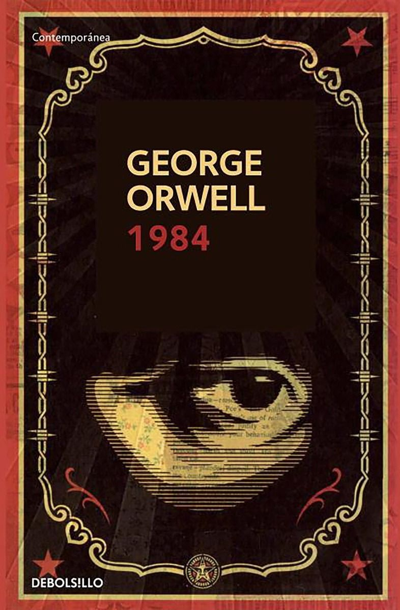

📖 Catálogo de Libros

El Principito
Antoine de Saint-Exupéry
Un clásico que mezcla filosofía y fantasía sobre un niño que viaja por el universo.

Cien Años de Soledad
Gabriel García Márquez
Una obra maestra del realismo mágico que narra la historia de la familia Buendía.

1984
George Orwell
Una novela distópica sobre el control totalitario y la vigilancia extrema.